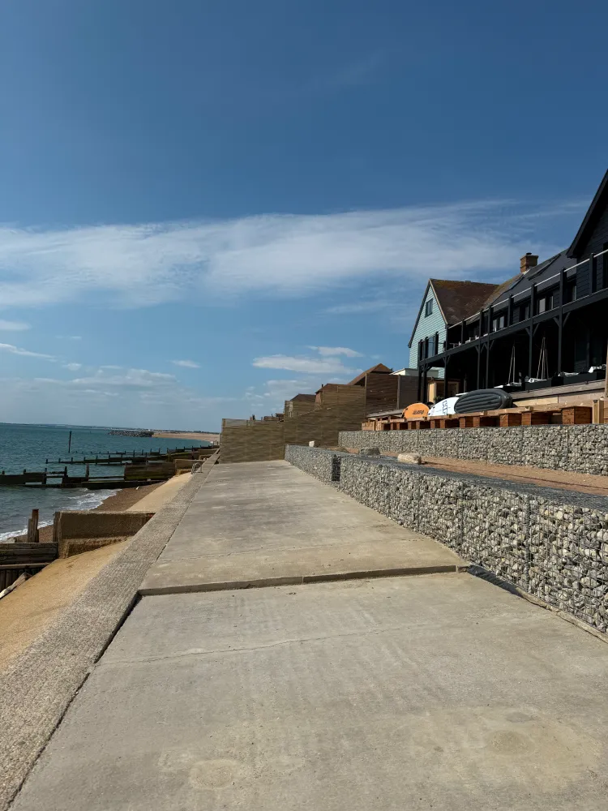

Structure, character and permanence.
Walls are the backbone of a well-designed garden. They create levels, define spaces, retain earth and provide the architectural framework that gives a garden its sense of permanence and quality.
A Sterling Landscapes builds walls that are structurally sound, aesthetically refined and designed to complement the wider garden scheme. From sweeping retaining walls that sculpt a sloping site to elegant feature walls that frame a seating area, every wall is built with care and precision.


A Sterling Landscapes works with a range of wall-building materials:
Every material is selected to complement the garden design and the character of the property.
A wall is only as good as its foundation. A Sterling Landscapes ensures every wall is built on properly excavated and reinforced footings, with appropriate drainage where retaining earth or managing water. This structural rigour means your walls will stand true and strong for generations.